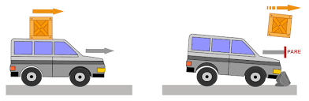
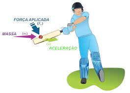
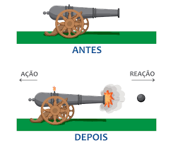

Um pouco de História
Newton era um géneo do século XVII, um homem brilhante, porém muito desagradável e difícil de se conviver. Suas contribuições para a ciência foram magníficas e muito importantes, com Newton nós podemos ver o universo como ele realmente é, ou seja, com ele o universo é descrito a partir não só de experimentos, como também a partir de equações vindas da matemática da sua própria teoria. Antes de Newton, as ideias sobre a descrição do universo eram as de Aristóteles, ele dizia que todas as leis do universo poderiam ser descritas por meio pensamentos e sem a necessidade de confirmação observacional, mas essas ideias começaram a ficar para trás inicialmente com Galileu que nos trouce as evidências experimentais.
Galileu, fez rolar duas bolas de pesos diferentes sobre um plano inclinado(suave). A situação é semelhante à de corpos pesados que caem verticalmente, mas mais fácil de observar, porque se movimentam com velocidades diferentes. As medições de Gallileu indicavam que a velocidade de cada corpo aumentava na mesma proporção, qualquer que fosse o seu peso. Por exemplo, se deixarmos rolar uma bola por uma encosta que desce um metro por cada dez metros de caminho andado, veremos que a bola desce a uma velocidade de cerca de um metro por segundo após um segundo, dois metros por segundo após dois segundos, e por aí fora, por mais pesada que seja. É evidente que uma bola de chumbo desce mais depressa que uma pena, mas tal se sucede porque a pena é retardada pela resistência do ar. Se deixarmos cair dois corpos que sofram pequena resitência por parte do ar, por exemplo dois pesos de chumbos diferentes, a velocidade de queda é a mesma.
Assista o vídeo abaixo que mostra como uma pena e um martelo na auxência de forças dessipativas caem ao mesmo tempo quando deixados cair de uma mesma altura.
As medições de Gallileu foram usadas por Newton como base para as suas leis do Movimento. Newton foi responsável por publicar em 1687 o livro de fisíca talvez mais importante e influente da história "Philosophiae Naturalis Principia Mathematica". Newton não só apresentou uma teoria sobre o movimento dos corpos, como desenvolveu o aparato matemático necessário para análise do movimento. Além disso, Newton postulou uma lei universal segundo a qual quaisquer dois corpos do Universo se atraíam com uma força tanto mais intensa quanto maiores as suas respectivas massas e maior a sua proximidade. Era esta mesma força que solicitava os corpos para o chão. (A história de que Newton se inspirou numa maçã que lhe caiu na cabeça é quase de certeza apócrifa. Tudo o que ele alguma vez disse foi que a ideia da gravidade lhe tinha surgido quando estava sentado "com os seus pensamentos" e "tinha sido provocada pela queda de uma maçã"). Newton mostrou ainda que, segundo a sua lei, a gravidade faz com que a Lua se mova numa órbita elíptica em redor da Terra e com que a Terra e os outros planetas sigam trajectórias elípticas em volta do Sol. Quer saber mais sobre a vida de Isaac Newton e suas contribuições para a ciência, acesse o seguinte link: Isaac Newton
As Três Leis de Movimento de Newton
Movimento nada mais é do que a variação de posição que um corpo experimenta no decorrer do tempo. Essas três leis revelam como os corpos se movem a medida que o tempo vai passando, revelando sua trajectória no espaço de maneira determinística, ou seja, com elas nós podemos prever o movimentos bem como suas trajectórias em qualquer instante conhecida a sua posição.Estas leis são descritas pela Mecânica Clássica. O físico Laplace uma vez disse que "se conhecéssemos a posição de todas as partículas do universo, nós poderíamos prever tudo o que acontece no passado e no futuro", porém isto não é verdade devido a um dos princípios mais importantes de uma grande teoria do início do século XIX "Mecânica Quântica". Hiesenberg, o pai da teoria quântica postulou o seguinte "É impossível prever com absoluta certeza a velocidade e posição de uma partícula no mundo sub-atómico", ou seja, esse princípio nos diz que se você acerta na medida da posição, você erra na medida da velocidade e vice-versa.
Com este princípio nós podemos ver que Laplace estava errado, isto é, nós podemos saber a posição de todas as partículas e ainda assim não conseguiríamos prever o que acontece no passado e no futuro com absoluta precisão.
A Primeira Lei de Newton
-
Lei da Inércia
Nas experiências de Galileu, quando um corpo rolava por um plano
inclinado exercia-se sobre ele sempre a mesma força (o seu peso), e o seu efeito era
fazer aumentar constantemente a velocidade. Isto mostrou que o verdadeiro efeito
da força é modificar sempre a velocidade de um corpo, e não só imprimir-lhe o
movimento, como se pensara antes. Também significava que, quando um corpo não
sofre o efeito de qualquer força, se manterá em movimento rectilíneo com
velocidade constante. Esta ideia foi explicitada pela primeira vez na obra de
Newton *Principia Mathematica*, publicada em 1687, e é conhecida por primeira lei
de Newton. Enunciado da primeira lei de Newton:
"Um corpo permanece em repouso ou em movimento retilíneo uniforme a menos que uma força externa haja sobre ele."

Na figura conseguimos ver que o carro junto com a caixa permaneceriam em movimento juntos, mas devido a actuação da força externa(bloco) isto não é mais verdade. Esta lei parece simples e obvia, mas não é bem assim, pois dela conseguimos ver que não existe diferença entre estar em repouso ou em movimento rectilíneo uniforme, ou seja, não existe um padrão único de repouso. Poder-se-ia igualmente dizer que um corpo A está em repouso e um corpo B em movimento com velocidade constante em relação ao corpo A, ou que um corpo B está em repouso e um corpo A em movimento. Por exemplo, se pusermos de lado, por instantes, a rotação da Terra e a sua órbita em torno do Sol, podemos dizer que a Terra está em repouso e que um comboio se desloca para norte a cento e vinte quilómetros por hora. Ou que o comboio está em repouso e que a Terra se move para sul a cento e vinte quilómetros por hora. Se efectuássemos experiências com corpos em movimento no comboio, todas as leis de Newton continuariam válidas. Por exemplo, jogando ténis de mesa no comboio, verificar-se-ia que a bola obedecia às leis de Newton, tal como a bola numa mesa colocada junto à linha. Portanto, não existe maneira de dizer se é o comboio ou a Terra que está em movimento. Isto é, " não há processo mecânico capaz de fazer distinguir entre estado de repouso e estado de movimento uniforme e rectilíneo ", Esta afirmação constitui o enunciado do princípio da relatividade galilaica.
A falta de um padrão absoluto de repouso significava que não era possível determinar se dois acontecimentos que ocorriam em momentos diferentes ocorriam na mesma posição no espaço. Por exemplo, suponhamos que a bola de ténis de mesa no comboio saltita verticalmente, para cima e para baixo, atingindo a mesa duas vezes no mesmo sítio com um segundo de intervalo. Para alguém na linha, os dois saltos pareceriam ocorrer a cerca de cem metros um do outro, porque o comboio teria percorrido essa distância entre os dois saltos. A não existência de repouso absoluto significava portanto que não se podia dar uma posição absoluta no espaço a um acontecimento, como :, Aristóteles acreditou. As posições dos acontecimentos e as distâncias entre eles seriam diferentes para uma pessoa no comboio e outra na linha, e não haveria motivo para dar preferência a qualquer delas. Newton preocupou-se muito com esta falta de posição absoluta ou espaço absoluto, como se chamava, por não estar de acordo com a sua ideia de um Deus absoluto. De facto, recusou-se a aceitar que o espaço não fosse absoluto, embora as suas leis o sugerissem. Muitas pessoas criticaram severamente a sua crença irracional, particularmente o bispo Berkeley, filósofo que acreditava que todos os objectos materiais e o espaço e o tempo não passavam de uma ilusão. Quando o famoso Dr. Johnson ouviu a opinião de Berkeley, gritou: "Refuto-a assim!" e deu um pontapé numa pedra.
Tanto Aristóteles como Newton acreditavam no tempo absoluto. Ou seja, acreditavam que se podia medir sem ambiguidade o intervalo de tempo entre dois acontecimentos, e que esse tempo seria o mesmo para quem quer que o medisse, desde que utilizasse um bom relógio. O tempo era completamente separado e independente do espaço. Isto é o que a maior parte das pessoas acharia ser uma opinião de senso comum. Contudo, fomos obrigados a mudar de ideias quanto ao espaço e ao tempo. Embora estas noções de aparente senso comum funcionem perfeitamente quando lidamos com coisas como maçãs ou planetas, que se movem relativamente devagar, já não funcionam à velocidade da luz ou perto dela. Nesses estágios o espaço e o tempo não são duas coisas separadas e independentes uma da outra, eles formam algo maior o "espaço-tempo", isto é, o tempo e espaço não são masi duas coisas separadas o tempo passa a ser apenas uma outra dimensão do espaço. Quer saber mais? acesse o link para masi informações Mecânica Relativista.
A Segunda Lei de Newton
-
Lei Fundamental da Dinâmica
Com a primeira lei de Newton nós podemos definir aquilo que se conhece como referências inerciais e aplicar a a segunda lei de Newton a estes referências e prever o movimento dos corpos, isto é, esta lei só é válida para referências inerciais.
A segunda lei é matemáticamente muito simples e até fácil de se entender. Ela nos diz o que acontece a corpo quando uma força actua sobre ele, afirma esta lei que o corpo acelerará, ou
modificará a sua velocidade proporcionalmente à força. (Por exemplo, a aceleração
será duas vezes maior se a força for duas vezes maior). A aceleração também é
menor quanto maior for a massa (ou quantidade de matéria) do corpo. (A mesma
força actuando sobre um corpo com o dobro da massa produzirá metade da
aceleração). O automóvel é um exemplo familiar: quanto mais potente for o motor,
maior será a aceleração, mas, quanto mais pesado for o carro, menor será a
aceleração para o mesmo motor. Enunciado:
"A aceleração a de um corpo é proporcional ao somatório de todas as forças F externas que actuam sobre ele, tendo a mesma direcção e sentido da força e o inverso é a sua massa."
Medidas de força e aceleração podem ser efectuadas no laboratório, de modo que, de acordo com a segunda lei, se uma força F conhecida é aplicada a um ponto material, a aceleração a do ponto material pode ser medida. Uma vez que força e aceleração são directamente proporcionais, a constante de proporcionalidade, m, pode ser determinada, considerando-se a razão m=F/a. O escalar positivo m é denominado de "massa" do ponto material. Sendo constante durante qualquer aceleração, m fornece uma medida quantitativa da resistência do ponto material a mudanças em sua velocidade.
Se a massa do ponto material é m, a segunda lei de Newton pode ser escrita na seguinte forma matemática: F=ma

Na figura nós podemos ver que a aceleração que o corpo ganha será proporcional a força aplicada sobre ele. Conhecida sua aceleração, podemos determinar com precisão o seu movimento e determinar aonde a bola vai cair precisamente(isto desconsiderando coisas como a resistência do ar)
Esta equação, conhecida como equação de movimento, é uma das mais importantes formulações da mecânica. Sua validade baseia-se somente em evidências experimentais. Em 1905, todavia, Albert Einstein desenvolveu a teoria da relatividade e impôs limites ao uso da segunda lei de Newton para a descrição do movimento geral de um ponto material. Por meio de experimentos, provou-se que o tempo não é uma quantidade absoluta, como supôs Newton; como resultado, a equação de movimento falha ao predizer o comportamento exacto de um ponto material, especialmente quando sua velocidade se equipara a velocidade da luz. Desenvolvimento da teoria quântica feitos por Erwin Schrödinger e outros indicam ainda que conclusões obtidads pelo uso da segunda lei não são válidas quando os corpos têm as dimensões de átomos e se movem próximos uns dos outros. Porém para maior parte dos casos como por exemplo, em engenharia, esses limites de velocidade e tamanho não são relevantes de modo que seus efeitos não são considerados.
Terceira lei de Newton
-
Lei da Acção-Reacção
A formulação teórica desta lei é bastante conhecida até mesmo para quem nunca estudou física, pois o que ela nos diz é o seguinte "toda acção tem uma reacção de mesma intensidade, mas sentido oposto". Esta lei é bastante simples e ela é vulgarmente enunciada por muitas pssoas que há por aí. Estas forças são conhecidas como de par de acção e reacção.
A forma como Newton representou matemáticamente esta lei é a seguinte: |F12| = -|F21|, um exemplo de como estas forças agem é o que acontece quando um caião despara uma bola. O caião exerce uma força sobre a bola desparando ela e a bola como resposta exerce também uma força com igual intensidade, mas sentido oposto fazendo o caião se deslocar para o outro lado.
Nota:
Os pares de acção e reacção sempre agem em corpos diferentes, pois se agissem no mesmo corpo elas se cancelariam e nada aconteceria desencadiando uma situação de equilíbrio, o que não é verdade.

Esta lei foi descrita por Newton em seu livro e ela parece bastante bonitinha e até mesmo muito simples, mas resta uma pergunta que ainda não foi espondida. Quanto tempo leva para essas forças agirem nos corpos cujo experimento é feito?
Newton dizia que estas forças nascem instâneamente, ou seja, se considerarmos a Terra e o Sol, o Sol exerce uma força na Terra e a Terra como resposta exerce uma força de igual intesidade no Sol, mas com sentido oposto. Porém isto mostrou-se não ser verdadeiro deacordo a teoria da relatividade desenvolvida por Einstein no século passado. Esta teoria diz que informação não pode se mover mais rápido do que a luz(c=299792458m/s). E tudo neste universo é informação, como por exemplo, um livro, uma lapiseira até mesmo o conteúdo aqui presente.
Isto significa que estas forças claramente não agem instâneamente uma na outra, ou seja, isto demora uma certa quantidade de tempo. Para ficar mais claro, considere que o Sol desapareça neste momento, quanto tempo restaria para a gente perc eber que isto aconteceu? Esse tempo é calculado em aproximadamente 8,3min, ou seja, até esse tempo se passar, para a Terra, o sol ainda exerce influência gravitacional e a Terra se manterá na sua orbita até os 8,3min se passarem. Isto significa que estas forças não surgem instâneamente, pois se assim fosse a Terra sairia de orbita instâneamente. O que siginica que a terceira lei tem suas limitações e ela não vale para todas as situação. Um outro exemplo da limitação desta lei, é em grandes velocidades, aonde se verifica a dilatação do tempo, em situações especificas de casos de eletromagnetismo, também não é verdadeira esta lei.